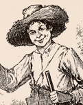
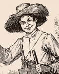
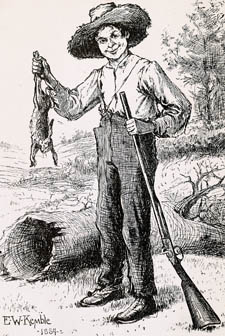
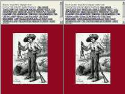
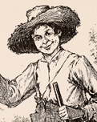

|

Edward Kemble was a struggling young artist in New York City when MT commissioned him to do the illustrations for Huck Finn. Because he could only afford to hire one model, a teenage boy named Cort posed for all the drawings. Cort changed costumes to represent the various characters, even putting on a "wool" cap when posing as Jim, but his one form provided the real model for the entire range of people Kemble drew. (See Kemble's account of "Illustrating Huckleberry Finn.") As far as I know, no drawing of Cort exists, but the frontispiece version of Huck (left) might give us an idea what Cort actually looked like. MT objected to this image, complaining that Huck's mouth was "a trifle more Irishy than necessary," and it's only in the first several chapters that Huck looks like this. As narrator, Huck never describes himself, and usually offers only a few descriptive details about the other characters. Thus for the most part to create his cast of images Kemble had to project his own ideas onto Cort's figure. The variety of faces, forms and features we see in his illustrations mainly derives from Kemble's own prejudices or preconceptions about different kinds of people: whites and blacks, "quality" folks and the lower class, men and women, wives and "spinsters," and so on. You can explore Kemble's preconceptions for yourself. Clicking on the icon at the right will take you to a frame set where you can choose from a gallery of 25 of Kemble's character sketches, and put any two at a time next to each other to see what he did with Cort's real form in order to transform it into a "plantation aristocrat," a "poor white," a "lady," a woman slave, a professional man, a male slave, and so on through all the socio-economic, racial and other categories. All these types, and the novel's major characters, are included in the gallery of choices. Whenever Huck does supply any physical details about a character, his words are included with the drawing, so you can see what MT's text gave Kemble to start with, and how closely he followed it. It's fun to look for signs of Cort in the various characters, but more significant, of course, are the specific ways Kemble altered Cort's features. And when we look at the ways he re-constructed Cort's figure, we're not just exploring Kemble's preconceptions. His illustrations for MT's novel were so popular that they launched him on a very successful career. This suggests that when we look at his representations of MT's characters, we're also exploring the preconceptions of his and MT's culture, the shared prejudices of the American reading public in MT's times. |
